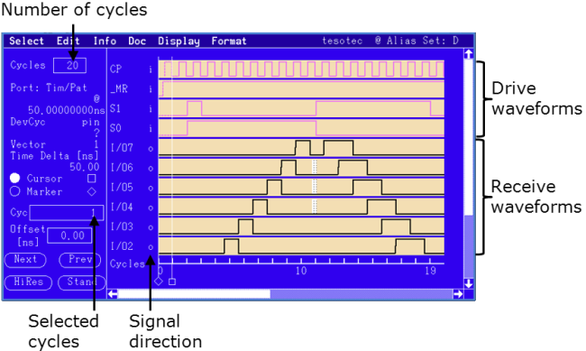
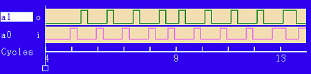
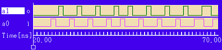

Using the Timing Diagram Tool
The Timing Diagram Tool displays all drive data for a test, but as with the Detailed Error map, it focuses on 8K cycles of received data at a time, in cycle oriented mode. For cycles outside the focused 8K, expected data is shown.
In failure oriented mode, your Timing Diagram focuses on received data for your complete test (as long as the test contains less than 8K cycles with errors).
On the SmarTest menu, click .

- Signal direction: Inputs and outputs of the DUT
The character (i or o) just left of the waveform display tells you the signal direction of each pin or group of pins.
- Outputs from the DUT are identified by the letter 'o'.
- Inputs to the DUT are identified by the letter 'i'.
- Groups of pins with inconsistent timing or signal format are identified by an asterisk ('*').
- Number of cycles
Cycles, in the top left-hand corner of the window, allows you to choose the number of cycles that are displayed at once.
The smaller the number of cycles you choose, the greater will be the detail shown for each cycle (see the table below).
The cycles available: 1,2,5,10,25,50,100
Diagram resolution
SmarTest provides the following resolutions to display results in the Timing Diagram tool:
- Standard Size = default resolution
SmarTest retrieves a single execution result from all the receive edges, and plots the output signal based on strobe edge delay.
- On the menu, click
- On the left pane, click Stand
- Double Size option = high resolution mode
The Double Size option allows you to view more pin waveforms at a time by enlarging the size of the window.
- On the menu, click
- On the left pane, click HiRes
For details, see High resolution mode.
- Scope Size option = scope function
The softscope function allows you to get a higher resolution and shows the waveforms like an oscilloscope.
- On the menu, click
- On the left pane, click Scope
For details, see Softscope function.
For a comparison of these modes, see Comparing resolution modes of the Timing Diagram.
Configuring the x-axis (cycle or time based)
You can switch the x-axis between cycle oriented mode (default) and time oriented mode.
- The cycle based axis refers to the selected port
- The time axis is global to all portsNote The time axis displays only the time elapsed while a cycle is running. Any other time is not reflected and set to "0". For example, at a sync point (CTIM or CLEV) or a match loop an unknown amount of time elapses and this cannot be reflected accurately; therefore, this time is set to "0".
On the menu, click:


Pins used and unused in executed pattern
The tool differs between pins that are used by the executed pattern and pins not used by that pattern. The Timing Diagram focuses on the used pins. Additionally it displays the first two unused drive pins that appear in the format definition; but they cannot be "formatted". That means, Timing Diagram tool displays no further information but the break waveform, if defined, with a dotted line. All other unused drive pins and all unused receive pins will not be displayed.
Functional changes
- Introduced before SmarTest 6.3.2
- SmarTest 7.1.0: Supports configurable x-axis
- SmarTest 7.1.4: Modified display of pins